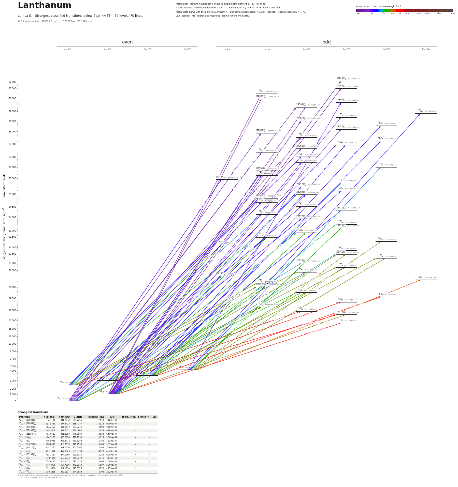

Lanthanum energy level diagram
Energy levels and transitions of neutral lanthanum (La I): the 70 strongest classified lines below 2 µm from the NIST Atomic Spectra Database and the 62 levels they connect, each line with its vacuum wavelength, frequency and, for 70 of them, the reduced dipole matrix element derived from the NIST transition rate. Lifetimes, hyperfine constants and isotope shifts from the literature have not been compiled for this element yet.
Hover a line or a level to isolate it, click to keep it selected. Scroll to zoom, drag to move.

Download: diagram (PDF) diagram (SVG) transitions (CSV) levels (CSV) source code

Strongest transitions of lanthanum
| Transition | λ vac (nm) | λ air (nm) | ν (THz) | |⟨J‖er‖J′⟩| (ea₀) | A (s⁻¹) | Γ/2π up. (MHz) | branch (%) | Use |
|---|---|---|---|---|---|---|---|---|
| 2D5/2 – (30965)°7/2 | 334.3191 | 334.2230 | 896.7256 | 2.823 | 5.400e+07 | – | – | |
| 2D3/2 – (27969)°3/2 | 357.5446 | 357.4425 | 838.4757 | 2.928 | 9.500e+07 | – | – | |
| 2D5/2 – (28506)°5/2 | 364.2557 | 364.1519 | 823.0276 | 3.609 | 9.100e+07 | – | – | |
| 2D3/2 – (25454)°1/2 | 392.8663 | 392.7551 | 763.0902 | 2.359 | 9.300e+07 | – | – | |
| 2D5/2 – (25950)°3/2 | 401.6523 | 401.5388 | 746.3980 | 2.884 | 6.500e+07 | – | – | |
| 4F9/2 – 4G°11/2 | 406.1463 | 406.0316 | 738.1390 | 4.714 | 5.600e+07 | – | – | |
| 4F7/2 – 4G°9/2 | 406.5926 | 406.4778 | 737.3289 | 3.786 | 4.320e+07 | – | – | |
| 2D3/2 – (23875)°5/2 | 418.8490 | 418.7310 | 715.7530 | 3.463 | 5.510e+07 | – | – | |
| 2D5/2 – (24410)°7/2 | 428.1460 | 428.0256 | 700.2107 | 4.199 | 5.690e+07 | – | – | |
| 4F9/2 – 4F°9/2 | 457.1304 | 457.0023 | 655.8139 | 4.523 | 4.340e+07 | – | – | |
| 2D3/2 – (20197)°1/2 | 495.1147 | 494.9766 | 605.5010 | 3.284 | 9.000e+07 | – | – | |
| 4F3/2 – 4D°1/2 | 510.7656 | 510.6233 | 586.9472 | 3.716 | 1.050e+08 | – | – | |
| 4F5/2 – 4D°3/2 | 514.6850 | 514.5417 | 582.4775 | 4.698 | 8.200e+07 | – | – | |
| 4F7/2 – 4D°5/2 | 517.8738 | 517.7296 | 578.8910 | 5.807 | 8.200e+07 | – | – | |
| 4F9/2 – 4D°7/2 | 521.3306 | 521.1854 | 575.0525 | 5.273 | 4.970e+07 | – | – | |
| 2D3/2 – 2D°3/2 | 550.2866 | 550.1337 | 544.7934 | 4.104 | 5.120e+07 | – | – |
λ, ν from NIST level energies unless a measured frequency for this isotope is available. A: measured value or NIST. Γ/2π: natural linewidth of the upper level, 1/(2πτ).
Listed La transitions below 2 µm
| Lower level | Upper level | λ vacuum (nm) | λ air (nm) | ν (THz) | Type | |⟨J‖er‖J′⟩| (ea₀) | A (s⁻¹) | Branching (%) | Source of matrix element / A |
|---|---|---|---|---|---|---|---|---|---|
| 2D5/2 | (32141)°7/2 | 321.6739 | 321.5810 | 931.9764 | E1 | 1.849 NIST | 2.600e+07 NIST | – | NIST ASD (accuracy C+) |
| 2D5/2 | (30965)°7/2 | 334.3191 | 334.2230 | 896.7256 | E1 | 2.823 NIST | 5.400e+07 NIST | – | NIST ASD (accuracy B) |
| 2D3/2 | (29502)°5/2 | 338.9580 | 338.8607 | 884.4531 | E1 | 1.079 NIST | 1.010e+07 NIST | – | NIST ASD (accuracy C+) |
| 2D5/2 | 4P°3/2 | 340.5496 | 340.4519 | 880.3194 | E1 (intercombination) | 1.045 NIST | 1.400e+07 NIST | – | NIST ASD (accuracy B) |
| 2D5/2 | (29937)°3/2 | 346.2175 | 346.1184 | 865.9078 | E1 | 1.267 NIST | 1.960e+07 NIST | – | NIST ASD (accuracy C+) |
| 2D5/2 | (29502)°5/2 | 351.5060 | 351.4055 | 852.8800 | E1 | 1.500 NIST | 1.750e+07 NIST | – | NIST ASD (accuracy C+) |
| 2D3/2 | (27969)°3/2 | 357.5446 | 357.4425 | 838.4757 | E1 | 2.928 NIST | 9.500e+07 NIST | – | NIST ASD (accuracy B+) |
| 2D3/2 | 2F°5/2 | 361.4105 | 361.3074 | 829.5068 | E1 | 1.481 NIST | 1.570e+07 NIST | – | NIST ASD (accuracy B) |
| 2D5/2 | 2F°7/2 | 363.7698 | 363.6661 | 824.1269 | E1 | 1.170 NIST | 7.200e+06 NIST | – | NIST ASD (accuracy B) |
| 2D5/2 | (28506)°5/2 | 364.2557 | 364.1519 | 823.0276 | E1 | 3.609 NIST | 9.100e+07 NIST | – | NIST ASD (accuracy B+) |
| 2D3/2 | (27393)°5/2 | 365.0562 | 364.9522 | 821.2227 | E1 | 1.646 NIST | 1.880e+07 NIST | – | NIST ASD (accuracy B) |
| 2D3/2 | 2P°3/2 | 367.3060 | 367.2014 | 816.1928 | E1 | 1.110 NIST | 1.260e+07 NIST | – | NIST ASD (accuracy C+) |
| 2D5/2 | (28039)°7/2 | 370.5586 | 370.4532 | 809.0285 | E1 | 2.044 NIST | 2.080e+07 NIST | – | NIST ASD (accuracy B) |
| 4F9/2 | (29895)°7/2 | 387.9979 | 387.8879 | 772.6652 | E1 | 1.375 NIST | 8.200e+06 NIST | – | NIST ASD (accuracy C+) |
| 2D3/2 | (25454)°1/2 | 392.8663 | 392.7551 | 763.0902 | E1 | 2.359 NIST | 9.300e+07 NIST | – | NIST ASD (accuracy B+) |
| 2D5/2 | 4P°5/2 | 395.4794 | 395.3675 | 758.0482 | E1 (intercombination) | 1.340 NIST | 9.800e+06 NIST | – | NIST ASD (accuracy C+) |
| 2D5/2 | (25950)°3/2 | 401.6523 | 401.5388 | 746.3980 | E1 | 2.884 NIST | 6.500e+07 NIST | – | NIST ASD (accuracy B+) |
| 2D3/2 | 2D°3/2 | 403.8348 | 403.7207 | 742.3641 | E1 | 2.240 NIST | 3.860e+07 NIST | – | NIST ASD (accuracy B+) |
| 4F9/2 | 4G°11/2 | 406.1463 | 406.0316 | 738.1390 | E1 | 4.714 NIST | 5.600e+07 NIST | – | NIST ASD (accuracy B+) |
| 4F7/2 | 4G°9/2 | 406.5926 | 406.4778 | 737.3289 | E1 | 3.786 NIST | 4.320e+07 NIST | – | NIST ASD (accuracy B+) |
| 2D5/2 | 4P°3/2 | 406.6721 | 406.5573 | 737.1847 | E1 (intercombination) | 1.778 NIST | 2.380e+07 NIST | – | NIST ASD (accuracy B+) |
| 2D3/2 | 4F°5/2 | 408.0322 | 407.9170 | 734.7275 | E1 (intercombination) | 1.929 NIST | 1.850e+07 NIST | – | NIST ASD (accuracy B+) |
| 4F5/2 | 4G°7/2 | 409.0765 | 408.9610 | 732.8519 | E1 | 3.369 NIST | 4.200e+07 NIST | – | NIST ASD (accuracy B+) |
| 4F3/2 | 4G°5/2 | 410.6029 | 410.4870 | 730.1275 | E1 | 2.906 NIST | 4.120e+07 NIST | – | NIST ASD (accuracy B+) |
| 2D5/2 | (25218)°5/2 | 413.8198 | 413.7031 | 724.4516 | E1 | 2.007 NIST | 1.920e+07 NIST | – | NIST ASD (accuracy B+) |
| 4F7/2 | 2G°9/2 | 414.5075 | 414.3907 | 723.2497 | E1 (intercombination) | 1.523 NIST | 6.600e+06 NIST | – | NIST ASD (accuracy B) |
| 2D5/2 | 4D°7/2 | 416.1431 | 416.0258 | 720.4072 | E1 (intercombination) | 1.809 NIST | 1.150e+07 NIST | – | NIST ASD (accuracy B) |
| 4F7/2 | 4G°7/2 | 417.3486 | 417.2310 | 718.3262 | E1 | 1.407 NIST | 6.900e+06 NIST | – | NIST ASD (accuracy B+) |
| 2D5/2 | (24984)°5/2 | 417.8658 | 417.7481 | 717.4371 | E1 | 1.597 NIST | 1.180e+07 NIST | – | NIST ASD (accuracy B+) |
| 2D3/2 | (23875)°5/2 | 418.8490 | 418.7310 | 715.7530 | E1 | 3.463 NIST | 5.510e+07 NIST | – | NIST ASD (accuracy B+) |
| 2D5/2 | (24410)°7/2 | 428.1460 | 428.0256 | 700.2107 | E1 | 4.199 NIST | 5.690e+07 NIST | – | NIST ASD (accuracy B+) |
| 4F3/2 | (24910)°3/2 | 449.5960 | 449.4699 | 666.8041 | E1 | 1.591 NIST | 1.410e+07 NIST | – | NIST ASD (accuracy B+) |
| 4F5/2 | (24984)°5/2 | 455.0773 | 454.9498 | 658.7726 | E1 | 2.272 NIST | 1.850e+07 NIST | – | NIST ASD (accuracy B+) |
| 4F7/2 | 4F°7/2 | 456.9184 | 456.7904 | 656.1181 | E1 | 3.509 NIST | 3.270e+07 NIST | – | NIST ASD (accuracy B+) |
| 4F9/2 | 4F°9/2 | 457.1304 | 457.0023 | 655.8139 | E1 | 4.523 NIST | 4.340e+07 NIST | – | NIST ASD (accuracy B+) |
| 4F3/2 | 4F°3/2 | 464.9943 | 464.8641 | 644.7229 | E1 | 2.002 NIST | 2.020e+07 NIST | – | NIST ASD (accuracy B+) |
| 2D3/2 | (20972)°5/2 | 476.8224 | 476.6891 | 628.7298 | E1 | 1.946 NIST | 1.180e+07 NIST | – | NIST ASD (accuracy B+) |
| 2D5/2 | 2G°7/2 | 485.2168 | 485.0812 | 617.8527 | E1 | 1.672 NIST | 6.200e+06 NIST | – | NIST ASD (accuracy B) |
| 2D3/2 | (20197)°1/2 | 495.1147 | 494.9766 | 605.5010 | E1 | 3.284 NIST | 9.000e+07 NIST | – | NIST ASD (accuracy B+) |
| 4F7/2 | 4D°7/2 | 504.8278 | 504.6871 | 593.8509 | E1 | 2.396 NIST | 1.130e+07 NIST | – | NIST ASD (accuracy B+) |
| 4F5/2 | 4D°5/2 | 505.1973 | 505.0564 | 593.4166 | E1 | 2.872 NIST | 2.160e+07 NIST | – | NIST ASD (accuracy B+) |
| 4F3/2 | 4D°3/2 | 505.7869 | 505.6459 | 592.7248 | E1 | 2.403 NIST | 2.260e+07 NIST | – | NIST ASD (accuracy B+) |
| 4F3/2 | 4D°1/2 | 510.7656 | 510.6233 | 586.9472 | E1 | 3.716 NIST | 1.050e+08 NIST | – | NIST ASD (accuracy B+) |
| 4F5/2 | 4D°3/2 | 514.6850 | 514.5417 | 582.4775 | E1 | 4.698 NIST | 8.200e+07 NIST | – | NIST ASD (accuracy B+) |
| 2D3/2 | 2D°5/2 | 516.0118 | 515.8681 | 580.9798 | E1 | 2.116 NIST | 1.100e+07 NIST | – | NIST ASD (accuracy B+) |
| 4F7/2 | 4D°5/2 | 517.8738 | 517.7296 | 578.8910 | E1 | 5.807 NIST | 8.200e+07 NIST | – | NIST ASD (accuracy B+) |
| 4F9/2 | 4D°7/2 | 521.3306 | 521.1854 | 575.0525 | E1 | 5.273 NIST | 4.970e+07 NIST | – | NIST ASD (accuracy B+) |
| 4F9/2 | (23221)°7/2 | 523.5731 | 523.4274 | 572.5894 | E1 | 4.890 NIST | 4.220e+07 NIST | – | NIST ASD (accuracy B+) |
| 2D5/2 | 4F°3/2 | 525.4912 | 525.3449 | 570.4995 | E1 (intercombination) | 2.951 NIST | 3.040e+07 NIST | – | NIST ASD (accuracy B+) |
| 2D5/2 | (20019)°3/2 | 527.2641 | 527.1174 | 568.5812 | E1 | 3.398 NIST | 3.990e+07 NIST | – | NIST ASD (accuracy B+) |
| 2D5/2 | 2D°5/2 | 545.6658 | 545.5142 | 549.4067 | E1 | 4.425 NIST | 4.070e+07 NIST | – | NIST ASD (accuracy B+) |
| 2D3/2 | 2D°3/2 | 550.2866 | 550.1337 | 544.7934 | E1 | 4.104 NIST | 5.120e+07 NIST | – | NIST ASD (accuracy B+) |
| 4F9/2 | 2G°9/2 | 550.5335 | 550.3806 | 544.5490 | E1 (intercombination) | 2.089 NIST | 5.300e+06 NIST | – | NIST ASD (accuracy B+) |
| 4F7/2 | (21448)°7/2 | 556.9996 | 556.8450 | 538.2274 | E1 | 2.006 NIST | 5.900e+06 NIST | – | NIST ASD (accuracy B) |
| 4F7/2 | 4F°9/2 | 558.9879 | 558.8328 | 536.3129 | E1 | 2.439 NIST | 6.900e+06 NIST | – | NIST ASD (accuracy B+) |
| 4F5/2 | 4F°7/2 | 563.2785 | 563.1222 | 532.2278 | E1 | 2.683 NIST | 1.020e+07 NIST | – | NIST ASD (accuracy B+) |
| 4F3/2 | 4F°5/2 | 565.9290 | 565.7719 | 529.7351 | E1 | 2.222 NIST | 9.200e+06 NIST | – | NIST ASD (accuracy B+) |
| 4F3/2 | 4F°3/2 | 574.2245 | 574.0652 | 522.0823 | E1 | 2.983 NIST | 2.380e+07 NIST | – | NIST ASD (accuracy B+) |
| 4F3/2 | (20019)°3/2 | 576.3422 | 576.1824 | 520.1640 | E1 | 2.749 NIST | 2.000e+07 NIST | – | NIST ASD (accuracy B+) |
| 4F5/2 | 4F°5/2 | 577.0924 | 576.9324 | 519.4878 | E1 | 4.207 NIST | 3.110e+07 NIST | – | NIST ASD (accuracy B+) |
| 4F9/2 | (21448)°7/2 | 577.1577 | 576.9976 | 519.4290 | E1 | 2.204 NIST | 6.400e+06 NIST | – | NIST ASD (accuracy C+) |
| 4F7/2 | 4F°7/2 | 579.0829 | 578.9224 | 517.7021 | E1 | 4.875 NIST | 3.100e+07 NIST | – | NIST ASD (accuracy B+) |
| 4F9/2 | 4F°9/2 | 579.2928 | 579.1322 | 517.5146 | E1 | 6.141 NIST | 3.930e+07 NIST | – | NIST ASD (accuracy B+) |
| 2D5/2 | (17910)°7/2 | 593.2252 | 593.0608 | 505.3603 | E1 | 2.350 NIST | 6.700e+06 NIST | – | NIST ASD (accuracy B+) |
| 4F9/2 | 4G°11/2 | 625.1638 | 624.9909 | 479.5423 | E1 | 7.297 NIST | 3.680e+07 NIST | – | NIST ASD (accuracy B+) |
| 4F7/2 | 4G°9/2 | 639.5995 | 639.4227 | 468.7190 | E1 | 6.235 NIST | 3.010e+07 NIST | – | NIST ASD (accuracy B+) |
| 4F5/2 | 4G°7/2 | 641.2757 | 641.0984 | 467.4939 | E1 | 4.220 NIST | 1.710e+07 NIST | – | NIST ASD (accuracy B+) |
| 2D5/2 | 2F°7/2 | 645.7768 | 645.5984 | 464.2354 | E1 | 3.128 NIST | 9.200e+06 NIST | – | NIST ASD (accuracy B+) |
| 4F3/2 | 4G°5/2 | 654.4956 | 654.3148 | 458.0512 | E1 | 3.130 NIST | 1.180e+07 NIST | – | NIST ASD (accuracy B+) |
| 4F5/2 | (17910)°7/2 | 671.1334 | 670.9481 | 446.6958 | E1 | 3.607 NIST | 1.090e+07 NIST | – | NIST ASD (accuracy B+) |
Reduced dipole matrix elements follow the convention A = ω³|d|²/(3πε₀ħc³(2J′+1)), with J′ the upper level. Tags show where a number comes from: measured, NIST compilation, high-accuracy theory, or a model calculation.
La energy levels
| Level | Energy (cm⁻¹) | J | Parity | Lifetime | gJ | Hyperfine A (MHz) | Hyperfine B (MHz) | Lifetime source | Hyperfine source |
|---|---|---|---|---|---|---|---|---|---|
| 2D3/2 | 0.000 | 3/2 | even | stable | 0.79755 | – | – | – | – |
| 2D5/2 | 1053.164 | 5/2 | even | – | 1.1991 | – | – | – | – |
| 4F3/2 | 2668.188 | 3/2 | even | – | 0.40446 | – | – | – | – |
| 4F5/2 | 3010.002 | 5/2 | even | – | 1.0294 | – | – | – | – |
| 4F7/2 | 3494.526 | 7/2 | even | – | 1.2374 | – | – | – | – |
| 4F9/2 | 4121.572 | 9/2 | even | – | 1.3328 | – | – | – | – |
| 2F°7/2 | 16538.390 | 7/2 | odd | – | 1.179 | – | – | – | – |
| (17910)°7/2 | 17910.170 | 7/2 | odd | – | 1.086 | – | – | – | – |
| 4G°5/2 | 17947.130 | 5/2 | odd | – | 1.061 | – | – | – | – |
| 2D°3/2 | 18172.350 | 3/2 | odd | – | 0.799 | – | – | – | – |
| 4G°7/2 | 18603.920 | 7/2 | odd | – | 1.051 | – | – | – | – |
| 4G°9/2 | 19129.310 | 9/2 | odd | – | 1.173 | – | – | – | – |
| 2D°5/2 | 19379.400 | 5/2 | odd | – | 1.186 | – | – | – | – |
| (20019)°3/2 | 20018.990 | 3/2 | odd | – | 1.01 | – | – | – | – |
| 4F°3/2 | 20082.980 | 3/2 | odd | – | 0.724 | – | – | – | – |
| 4G°11/2 | 20117.380 | 11/2 | odd | – | 1.29 | – | – | – | – |
| (20197)°1/2 | 20197.340 | 1/2 | odd | – | 0.63 | – | – | – | – |
| 4F°5/2 | 20338.250 | 5/2 | odd | – | 1.006 | – | – | – | – |
| 4F°7/2 | 20763.210 | 7/2 | odd | – | 1.178 | – | – | – | – |
| (20972)°5/2 | 20972.170 | 5/2 | odd | – | 0.89 | – | – | – | – |
| 4F°9/2 | 21384.000 | 9/2 | odd | – | 1.278 | – | – | – | – |
| (21448)°7/2 | 21447.860 | 7/2 | odd | – | 1.103 | – | – | – | – |
| 2G°7/2 | 21662.510 | 7/2 | odd | – | 0.995 | – | – | – | – |
| 4D°1/2 | 22246.640 | 1/2 | odd | – | 0.04 | – | – | – | – |
| 2G°9/2 | 22285.770 | 9/2 | odd | – | 1.13 | – | – | – | – |
| 4D°3/2 | 22439.360 | 3/2 | odd | – | 1.192 | – | – | – | – |
| 4D°5/2 | 22804.250 | 5/2 | odd | – | 1.362 | – | – | – | – |
| (23221)°7/2 | 23221.100 | 7/2 | odd | – | 1.078 | – | – | – | – |
| 4D°7/2 | 23303.260 | 7/2 | odd | – | 1.178 | – | – | – | – |
| (23875)°5/2 | 23874.950 | 5/2 | odd | – | 0.962 | – | – | – | – |
| 4F°3/2 | 24173.830 | 3/2 | odd | – | 0.717 | – | – | – | – |
| (24410)°7/2 | 24409.680 | 7/2 | odd | – | 1.161 | – | – | – | – |
| 4F°5/2 | 24507.870 | 5/2 | odd | – | 1.158 | – | – | – | – |
| 2D°3/2 | 24762.600 | 3/2 | odd | – | 0.854 | – | – | – | – |
| (24910)°3/2 | 24910.380 | 3/2 | odd | – | 0.724 | – | – | – | – |
| (24984)°5/2 | 24984.290 | 5/2 | odd | – | 1.063 | – | – | – | – |
| 4D°7/2 | 25083.360 | 7/2 | odd | – | 1.381 | – | – | – | – |
| (25218)°5/2 | 25218.270 | 5/2 | odd | – | 1.244 | – | – | – | – |
| 4F°7/2 | 25380.270 | 7/2 | odd | – | 1.228 | – | – | – | – |
| (25454)°1/2 | 25453.950 | 1/2 | odd | – | 0.984 | – | – | – | – |
| 4P°3/2 | 25643.000 | 3/2 | odd | – | 1.59 | – | – | – | – |
| (25950)°3/2 | 25950.320 | 3/2 | odd | – | 1.433 | – | – | – | – |
| 4F°9/2 | 25997.170 | 9/2 | odd | – | 1.319 | – | – | – | – |
| 4P°5/2 | 26338.930 | 5/2 | odd | – | 1.524 | – | – | – | – |
| 4G°5/2 | 27022.620 | 5/2 | odd | – | 0.58 | – | – | – | – |
| 2P°3/2 | 27225.260 | 3/2 | odd | – | 1.31 | – | – | – | – |
| (27393)°5/2 | 27393.040 | 5/2 | odd | – | 0.888 | – | – | – | – |
| 4G°7/2 | 27455.310 | 7/2 | odd | – | 0.976 | – | – | – | – |
| 2G°9/2 | 27619.540 | 9/2 | odd | – | 1.12 | – | – | – | – |
| 2F°5/2 | 27669.370 | 5/2 | odd | – | 0.88 | – | – | – | – |
| (27969)°3/2 | 27968.540 | 3/2 | odd | – | 0.836 | – | – | – | – |
| (28039)°7/2 | 28039.450 | 7/2 | odd | – | 1.14 | – | – | – | – |
| 4G°9/2 | 28089.170 | 9/2 | odd | – | 1.163 | – | – | – | – |
| (28506)°5/2 | 28506.410 | 5/2 | odd | – | 1.2 | – | – | – | – |
| 2F°7/2 | 28543.080 | 7/2 | odd | – | 1.12 | – | – | – | – |
| 4G°11/2 | 28743.240 | 11/2 | odd | – | 1.27 | – | – | – | – |
| (29502)°5/2 | 29502.180 | 5/2 | odd | – | 1.263 | – | – | – | – |
| (29895)°7/2 | 29894.910 | 7/2 | odd | – | 1.352 | – | – | – | – |
| (29937)°3/2 | 29936.740 | 3/2 | odd | – | 1.492 | – | – | – | – |
| 4P°3/2 | 30417.460 | 3/2 | odd | – | 1.533 | – | – | – | – |
| (30965)°7/2 | 30964.710 | 7/2 | odd | – | 1.15 | – | – | – | – |
| (32141)°7/2 | 32140.550 | 7/2 | odd | – | 1.15 | – | – | – | – |
La⁺ ionisation limit 44981.00 cm⁻¹ = 5.57693 eV (222.316 nm)
Sources
Atoms with measured data
- Lithium-632 levels, 85 lines
- Lithium-732 levels, 85 lines
- Beryllium-915 levels, 24 lines
- Sodium-2336 levels, 106 lines
- Magnesium-2418 levels, 61 lines
- Magnesium-2518 levels, 61 lines
- Potassium-3934 levels, 84 lines
- Potassium-4034 levels, 84 lines
- Potassium-4134 levels, 84 lines
- Calcium-4035 levels, 61 lines
- Calcium-4335 levels, 61 lines
- Rubidium-8536 levels, 94 lines
- Rubidium-8736 levels, 94 lines
- Strontium-8740 levels, 70 lines
- Strontium-8840 levels, 70 lines
- Caesium-13331 levels, 79 lines
- Barium-13744 levels, 89 lines
- Barium-13844 levels, 89 lines
- Dysprosium-16339 levels, 55 lines
- Dysprosium-16439 levels, 55 lines
- Ytterbium-17118 levels, 26 lines
- Ytterbium-17418 levels, 26 lines